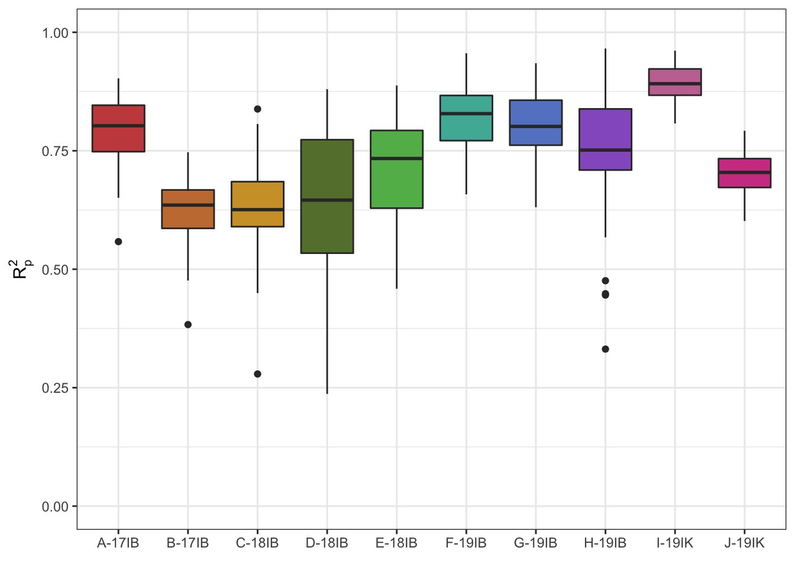
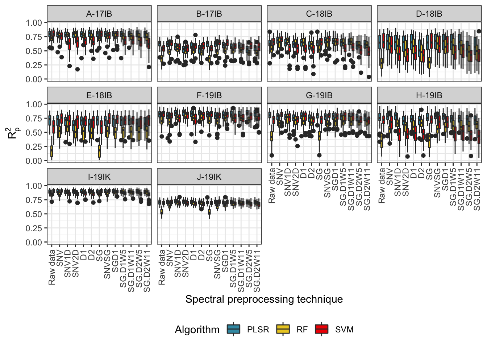
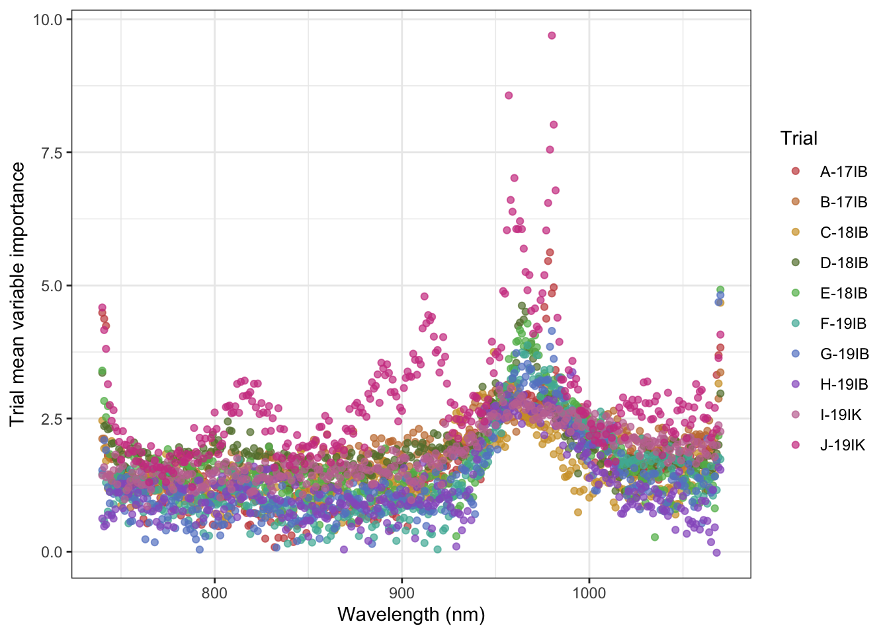
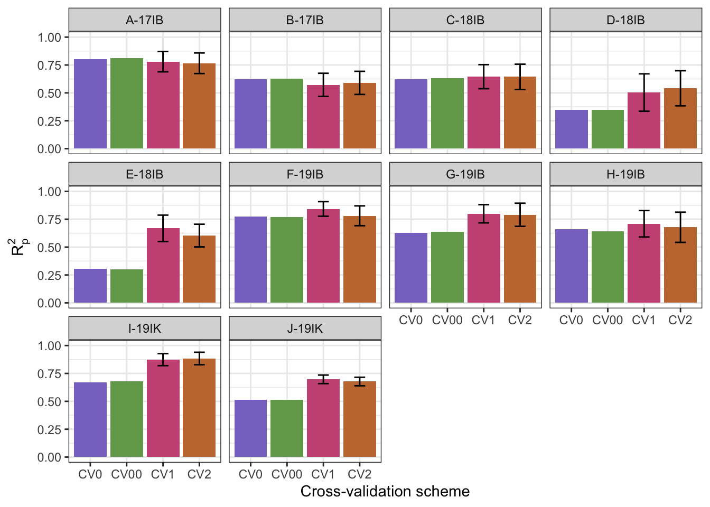

Last updated: 2021-04-30
Checks: 6 1
Knit directory: CassavaNIRS/
This reproducible R Markdown analysis was created with workflowr (version 1.6.2). The Checks tab describes the reproducibility checks that were applied when the results were created. The Past versions tab lists the development history.
The R Markdown file has staged changes. To know which version of the R Markdown file created these results, you’ll want to first commit it to the Git repo. If you’re still working on the analysis, you can ignore this warning. When you’re finished, you can run wflow_publish to commit the R Markdown file and build the HTML.
Great job! The global environment was empty. Objects defined in the global environment can affect the analysis in your R Markdown file in unknown ways. For reproduciblity it’s best to always run the code in an empty environment.
The command set.seed(20210419) was run prior to running the code in the R Markdown file. Setting a seed ensures that any results that rely on randomness, e.g. subsampling or permutations, are reproducible.
Great job! Recording the operating system, R version, and package versions is critical for reproducibility.
Nice! There were no cached chunks for this analysis, so you can be confident that you successfully produced the results during this run.
Great job! Using relative paths to the files within your workflowr project makes it easier to run your code on other machines.
Great! You are using Git for version control. Tracking code development and connecting the code version to the results is critical for reproducibility.
The results in this page were generated with repository version 759b463. See the Past versions tab to see a history of the changes made to the R Markdown and HTML files.
Note that you need to be careful to ensure that all relevant files for the analysis have been committed to Git prior to generating the results (you can use wflow_publish or wflow_git_commit). workflowr only checks the R Markdown file, but you know if there are other scripts or data files that it depends on. Below is the status of the Git repository when the results were generated:
Ignored files:
Ignored: .DS_Store
Ignored: .Rhistory
Ignored: .Rproj.user/
Ignored: Hershberger_CassavaNIRS_2021.zip
Ignored: analysis/.DS_Store
Ignored: code/.DS_Store
Ignored: data/.DS_Store
Ignored: data/Cassavabase_phenotypes_20210419.csv
Ignored: data/Corrected_metadata/
Ignored: data/README.html
Ignored: data/README.txt
Ignored: data/Spectra/
Ignored: data/TrialNameKey.csv
Ignored: data/raw_pheno.csv
Ignored: data/raw_scans.csv
Ignored: output/.DS_Store
Ignored: output/Figure2_DMC_distributions.png
Ignored: output/Figure4_within_predictions.png
Ignored: output/Figure5_Subsamples.png
Ignored: output/Figure6_RF_Importance.png
Ignored: output/Figure7_CV_predictions.png
Ignored: output/FigureS2_within_trial_prediction_all.png
Ignored: output/S1_overlapping_accession_counts.csv
Ignored: output/S3_removed_scans.csv
Ignored: output/Table2_DMC_statistics.csv
Ignored: output/Table3_performance_summary.csv
Ignored: output/TableS2_within_trial_predictions.csv
Ignored: output/TableS4_cv_results.csv
Ignored: output/cv_base.png
Ignored: output/cv_results.csv
Ignored: output/full_filtered_plots.csv
Ignored: output/full_filtered_subsamples.csv
Ignored: output/full_filtered_unaggregated.csv
Ignored: output/subsampling_prediction_results_2021.csv
Ignored: output/within_trial_waves_PLSR.csv
Ignored: output/within_trial_waves_RF.csv
Ignored: output/within_trial_waves_RF_importance.csv
Ignored: output/within_trial_waves_SVM.csv
Unstaged changes:
Modified: analysis/_site.yml
Modified: analysis/filter_aggregate.Rmd
Modified: analysis/manuscript_predictions.Rmd
Modified: analysis/manuscript_subsampling.Rmd
Staged changes:
Modified: .gitignore
Modified: analysis/filter_aggregate.Rmd
Modified: analysis/manuscript_predictions.Rmd
Modified: analysis/manuscript_summary_figures.Rmd
Modified: code/server_CV.R
Modified: code/server_within_trial_predictions_PLSR_RF_SVM.R
Note that any generated files, e.g. HTML, png, CSS, etc., are not included in this status report because it is ok for generated content to have uncommitted changes.
These are the previous versions of the repository in which changes were made to the R Markdown (analysis/manuscript_predictions.Rmd) and HTML (docs/manuscript_predictions.html) files. If you’ve configured a remote Git repository (see ?wflow_git_remote), click on the hyperlinks in the table below to view the files as they were in that past version.
| File | Version | Author | Date | Message |
|---|---|---|---|---|
| Rmd | 8f143af | Jenna Hershberger | 2021-04-21 | Add content |
library(tidyverse)── Attaching packages ─────────────────────────────────────── tidyverse 1.3.0 ──✓ ggplot2 3.3.3 ✓ purrr 0.3.4
✓ tibble 3.1.1 ✓ dplyr 1.0.5
✓ tidyr 1.1.2 ✓ stringr 1.4.0
✓ readr 1.4.0 ✓ forcats 0.5.0── Conflicts ────────────────────────────────────────── tidyverse_conflicts() ──
x dplyr::filter() masks stats::filter()
x dplyr::lag() masks stats::lag()library(reshape2)
Attaching package: 'reshape2'The following object is masked from 'package:tidyr':
smithslibrary(readxl)
library(agricolae)
library(waves)
library(wesanderson)
iwanthue <- c("#c84d4c","#c77c3f","#d19f32","#647e3a","#61b858","#4db5a4",
"#6585cc","#975fc7","#c575a1","#cf4391")
namekey <- read.csv("data/TrialNameKey.csv") %>% rename(Trial = Abbreviated.Trial.Name) plots.aggregated <- read.csv("output/full_filtered_plots.csv",
stringsAsFactors = F) %>%
left_join(namekey) %>%
dplyr::select(-studyName) %>%
rename(studyName = Trial) %>%
distinct()Joining, by = "studyName"Run on server using “server_within_trial_predictions_PLSR_RF_SVM.R”
waves_results_flat_PLSR <- read.csv("output/within_trial_waves_PLSR.csv") %>%
left_join(namekey) %>%
dplyr::select(-studyName) %>%
rename(studyName = Trial) %>%
dplyr::select(studyName, everything())Joining, by = "studyName"getmode <- function(vector.input){
as.matrix(vector.input)
unique.vector <- unique(vector.input)
return(unique.vector[which.max(tabulate(match(vector.input,unique.vector)))])
}
tempPLSR <- waves_results_flat_PLSR %>%
filter(Pretreatment == "Raw_data") %>%
dplyr::select(-Iteration, -Pretreatment)
PLSR.means.df <- tempPLSR %>% group_by(studyName) %>%
summarize_all(., .funs = mean)
PLSR.means.df[,-1] <- as.matrix(round(PLSR.means.df[,-1],3))
PLSR.sd.df <- tempPLSR %>% group_by(studyName) %>%
summarize_all(., sd, na.rm = TRUE)
PLSR.sd.df[,-1] <- as.matrix(round(PLSR.sd.df[,-1],3))
PLSR.mode.df <- tempPLSR %>% group_by(studyName) %>%
summarize_all(., getmode)
PLSR.mode.df[,-1] <- as.matrix(round(PLSR.mode.df[,-1],3))
summarized_results_flat_PLSR <- cbind(PLSR.means.df[, 1:11], PLSR.mode.df[,12])
summarized_results_flat_PLSR[-1] <- Map(function(x, y) sprintf("%0.2f (%0.2f)",
x, y),
summarized_results_flat_PLSR[-1], PLSR.sd.df[-1])
write.csv(summarized_results_flat_PLSR,
"output/Table3_performance_summary.csv", row.names = F)
waves_results_flat_PLSR$Pretreatment <- factor(waves_results_flat_PLSR$Pretreatment,
levels = unique(waves_results_flat_PLSR$Pretreatment))
raw_prediction_boxplots <- waves_results_flat_PLSR %>%
filter(Pretreatment == "Raw_data") %>%
#mutate(programName = c(rep("IITA", 160), rep("Embrapa", 70))) %>%
ggplot(aes(x = studyName, y = R2p, fill =studyName)) +
geom_boxplot() +
lims(y = c(0,1))+
theme_bw() + #facet_wrap(~studyName) +
labs(#title = "Within-trial DMC prediction with PLSR using waves",
#subtitle = "No pretreatment",
x = element_blank(),
y = expression(R[p]^{2})) +
scale_fill_manual(values = iwanthue, name = "Trial") +
theme(#axis.text.x = element_text(angle = 90, hjust = 1),
legend.position = "none")
# theme(axis.text.x = element_blank(), axis.ticks.x = element_blank(),
# legend.position = "bottom")
raw_prediction_boxplots
ggsave(raw_prediction_boxplots, filename = "output/Figure4_within_predictions.png",
bg = "transparent", height=6, width=7)
waves_results_flat_PLSR <- read.csv("output/within_trial_waves_PLSR.csv") %>%
mutate(Algorithm = "PLSR") %>%
left_join(namekey) %>%
dplyr::select(-studyName) %>%
rename(studyName = Trial) %>%
dplyr::select(Algorithm, studyName, Pretreatment:R2sp)Joining, by = "studyName"waves_results_flat_RF <- read.csv("output/within_trial_waves_RF.csv") %>%
mutate(Algorithm = "RF") %>%
left_join(namekey) %>%
dplyr::select(-studyName) %>%
rename(studyName = Trial) %>%
dplyr::select(Algorithm, studyName, Pretreatment:R2sp)Joining, by = "studyName"waves_results_flat_SVM <- read.csv("output/within_trial_waves_SVM.csv") %>%
mutate(Algorithm = "SVM") %>%
left_join(namekey) %>%
dplyr::select(-studyName) %>%
rename(studyName = Trial) %>%
dplyr::select(Algorithm, studyName, Pretreatment:R2sp)Joining, by = "studyName"waves_results_flat <- rbind(waves_results_flat_PLSR, waves_results_flat_RF, waves_results_flat_SVM)
waves_results_flat$Pretreatment <- factor(waves_results_flat$Pretreatment,
levels = unique(waves_results_flat$Pretreatment))
prediction_boxplots_all <- waves_results_flat %>%
mutate(Pretreatment = recode(Pretreatment, "Raw_data" = "Raw data")) %>%
ggplot(aes(x = Pretreatment, y = R2p, fill = Algorithm)) +
geom_boxplot() +
theme_bw() + facet_wrap(~studyName) +
labs(#title = "Within-trial DMC prediction using waves",
#subtitle = "Algorithm comparison with 50 iterations of waves pipeline",
x = "Spectral preprocessing technique",
y = expression(R[p]^{2})) +
scale_fill_manual(values=wes_palette(name="Zissou1", 3, type = "continuous"),
name = "Algorithm") +
theme(axis.text.x = element_text(angle = 90, vjust = 0.5, hjust = 1),
legend.position = "bottom")
prediction_boxplots_all
ggsave(prediction_boxplots_all, filename = "output/FigureS2_within_trial_prediction_all.png",
bg = "transparent", height = 7, width = 9)
write.csv(waves_results_flat, "output/TableS2_within_trial_predictions.csv", row.names = F)rfimportance <- read.csv("output/within_trial_waves_RF_importance.csv") %>%
left_join(namekey) %>%
dplyr::select(-studyName) %>%
rename(studyName = Trial) %>%
drop_na(studyName) %>%
dplyr::select(studyName, everything())Joining, by = "studyName"rfimportance_plot_points <- rfimportance %>%
pivot_longer(., cols = starts_with("X"), names_to = "Wavelength", values_to = "RF.importance") %>%
group_by(studyName, Wavelength) %>%
summarize(RF.importance.mean = mean(RF.importance)) %>%
ggplot(aes(x = parse_number(as.character(Wavelength)), y = RF.importance.mean,
color = studyName)) +
labs(#title = "Random forest variable importance",
#subtitle = "Trial mean of 10 iterations of model development",
x = "Wavelength (nm)",
y = "Trial mean variable importance") +
geom_point(alpha = 0.7) +
scale_color_manual(values = iwanthue, name = "Trial") +
lims(x = c(740 ,1070)) +
theme_bw()`summarise()` has grouped output by 'studyName'. You can override using the `.groups` argument.rfimportance_plot_points
ggsave(rfimportance_plot_points, filename = "output/Figure6_RF_Importance.png",
bg = "transparent",height=5, width=7)cv_results <- read.csv("output/cv_results.csv") %>%
left_join(namekey) %>%
dplyr::select(-studyName) %>%
rename(studyName = Trial) %>%
drop_na(studyName) Joining, by = "studyName"cv_pal <- c("#8975ca","#71a659","#cb5683","#c5783e")
# study-level means
cv_results %>% group_by(studyName, CV.scheme) %>% summarize_all(mean) %>% arrange(CV.scheme, R2p) %>% print(n = "inf")# A tibble: 40 x 14
# Groups: studyName [10]
studyName CV.scheme Iteration RMSEp R2p RPD RPIQ CCC Bias SEP
<fct> <fct> <dbl> <dbl> <dbl> <dbl> <dbl> <dbl> <dbl> <dbl>
1 E-18IB CV0 1 3.14 0.306 1.03 1.39 0.526 -1.00 3.19
2 D-18IB CV0 1 3.36 0.347 0.707 0.803 0.385 -2.51 3.41
3 J-19IK CV0 1 4.14 0.511 1.12 1.56 0.585 -2.58 4.16
4 B-17IB CV0 1 3.79 0.621 1.11 1.16 0.695 -2.21 3.83
5 C-18IB CV0 1 3.80 0.624 1.28 1.56 0.764 -0.226 3.87
6 G-19IB CV0 1 1.67 0.628 1.62 2.24 0.780 -0.346 1.71
7 H-19IB CV0 1 3.23 0.660 0.858 0.984 0.530 2.77 3.31
8 I-19IK CV0 1 4.19 0.671 1.30 2.12 0.708 2.81 4.26
9 F-19IB CV0 1 2.43 0.774 2.17 2.91 0.875 0.140 2.51
10 A-17IB CV0 1 3.14 0.803 2.18 2.94 0.892 0.670 3.20
11 E-18IB CV00 1 3.15 0.302 1.03 1.38 0.522 -1.02 3.20
12 D-18IB CV00 1 3.32 0.349 0.716 0.813 0.391 -2.46 3.37
13 J-19IK CV00 1 4.17 0.516 1.11 1.55 0.582 -2.64 4.19
14 B-17IB CV00 1 3.76 0.625 1.12 1.17 0.699 -2.20 3.79
15 C-18IB CV00 1 3.75 0.633 1.30 1.58 0.770 -0.333 3.82
16 G-19IB CV00 1 1.68 0.636 1.61 2.24 0.781 -0.435 1.71
17 H-19IB CV00 1 3.26 0.641 0.850 0.975 0.521 2.78 3.34
18 I-19IK CV00 1 4.19 0.680 1.30 2.12 0.712 2.85 4.26
19 F-19IB CV00 1 2.45 0.770 2.15 2.88 0.872 0.171 2.53
20 A-17IB CV00 1 3.06 0.813 2.24 3.02 0.898 0.622 3.11
21 D-18IB CV1 25.5 2.30 0.503 1.38 1.45 0.657 -0.442 2.33
22 B-17IB CV1 25.5 2.77 0.572 1.49 2.02 0.736 -0.195 2.80
23 C-18IB CV1 25.5 3.54 0.645 1.54 2.17 0.781 0.140 3.60
24 E-18IB CV1 25.5 1.67 0.668 1.71 2.46 0.768 -0.397 1.70
25 J-19IK CV1 25.5 2.30 0.697 1.80 2.47 0.817 -0.0448 2.31
26 H-19IB CV1 25.5 1.50 0.709 1.76 1.99 0.796 0.579 1.54
27 A-17IB CV1 25.5 2.86 0.780 2.17 2.87 0.867 0.0213 2.91
28 G-19IB CV1 25.5 1.66 0.799 2.21 2.87 0.858 -0.0107 1.70
29 F-19IB CV1 25.5 1.94 0.842 2.38 3.13 0.894 0.168 2.01
30 I-19IK CV1 25.5 2.79 0.874 2.87 4.34 0.922 0.360 2.84
31 D-18IB CV2 25.5 2.48 0.541 1.28 1.34 0.638 -1.24 2.52
32 B-17IB CV2 25.5 3.05 0.590 1.35 1.83 0.740 -0.859 3.08
33 E-18IB CV2 25.5 1.82 0.603 1.55 2.23 0.746 -0.378 1.85
34 C-18IB CV2 25.5 3.71 0.644 1.47 2.07 0.776 0.353 3.77
35 J-19IK CV2 25.5 2.36 0.677 1.75 2.40 0.807 -0.122 2.38
36 H-19IB CV2 25.5 2.40 0.678 1.08 1.23 0.603 1.95 2.46
37 A-17IB CV2 25.5 3.01 0.766 2.05 2.72 0.861 0.642 3.06
38 F-19IB CV2 25.5 2.21 0.781 2.09 2.75 0.858 0.126 2.28
39 G-19IB CV2 25.5 1.64 0.790 2.25 2.92 0.866 -0.351 1.68
40 I-19IK CV2 25.5 2.89 0.884 2.78 4.20 0.913 1.06 2.94
# … with 4 more variables: RMSEcv <dbl>, R2cv <dbl>, R2sp <dbl>,
# best.ncomp <dbl># scheme means across all studies
cv_results %>% group_by(CV.scheme) %>% summarize_all(mean) %>% print(n = "inf")Warning in mean.default(studyName): argument is not numeric or logical:
returning NA
Warning in mean.default(studyName): argument is not numeric or logical:
returning NA
Warning in mean.default(studyName): argument is not numeric or logical:
returning NA
Warning in mean.default(studyName): argument is not numeric or logical:
returning NA# A tibble: 4 x 14
CV.scheme Iteration RMSEp R2p RPD RPIQ CCC Bias SEP RMSEcv R2cv
<fct> <dbl> <dbl> <dbl> <dbl> <dbl> <dbl> <dbl> <dbl> <dbl> <dbl>
1 CV0 1 3.29 0.595 1.34 1.77 0.674 -0.248 3.35 2.46 0.868
2 CV00 1 3.28 0.596 1.34 1.77 0.675 -0.266 3.33 2.45 0.871
3 CV1 25.5 2.33 0.709 1.93 2.58 0.810 0.0180 2.37 2.34 0.814
4 CV2 25.5 2.56 0.695 1.76 2.37 0.781 0.118 2.60 2.48 0.867
# … with 3 more variables: R2sp <dbl>, best.ncomp <dbl>, studyName <dbl>cv.predictions.plot <- cv_results %>%
group_by(studyName, CV.scheme) %>%
summarize(meanR2p = mean(R2p),
sdR2p = sd(R2p)) %>%
mutate(R2pupper = meanR2p + sdR2p,
R2plower = meanR2p - sdR2p) %>%
ggplot(aes(x = CV.scheme,
y = meanR2p,
fill = CV.scheme)) +
geom_col() +
geom_errorbar(aes(ymin = R2plower, ymax = R2pupper, width = .3)) +
facet_wrap(~studyName) +
labs(#title = "Dry matter content prediction with partial least squares regression",
#subtitle = "Models trained according to cross-validation schemes",
y = expression(R[p]^{2}),
x = "Cross-validation scheme") +
scale_y_continuous(limits = c(0,1)) +
theme_bw() +
scale_fill_manual(values = cv_pal, name = "Trial") +
theme(legend.position = "none")`summarise()` has grouped output by 'studyName'. You can override using the `.groups` argument.cv.predictions.plot
ggsave(plot = cv.predictions.plot, filename = "output/Figure7_CV_predictions.png",
units = "in", height = 5, width = 7)
cv_results %>%
rename(Trial = studyName) %>%
write.csv(., "output/TableS4_cv_results.csv", row.names = F)
sessionInfo()R version 3.5.2 (2018-12-20)
Platform: x86_64-apple-darwin18.2.0 (64-bit)
Running under: macOS Mojave 10.14.6
Matrix products: default
BLAS/LAPACK: /usr/local/Cellar/openblas/0.3.6_1/lib/libopenblasp-r0.3.6.dylib
locale:
[1] en_US.UTF-8/en_US.UTF-8/en_US.UTF-8/C/en_US.UTF-8/en_US.UTF-8
attached base packages:
[1] stats graphics grDevices utils datasets methods base
other attached packages:
[1] wesanderson_0.3.6 waves_0.1.0 agricolae_1.3-3 readxl_1.3.1
[5] reshape2_1.4.4 forcats_0.5.0 stringr_1.4.0 dplyr_1.0.5
[9] purrr_0.3.4 readr_1.4.0 tidyr_1.1.2 tibble_3.1.1
[13] ggplot2_3.3.3 tidyverse_1.3.0 workflowr_1.6.2
loaded via a namespace (and not attached):
[1] colorspace_2.0-0 prospectr_0.2.0 ellipsis_0.3.1
[4] class_7.3-18 rprojroot_2.0.2 pls_2.7-3
[7] fs_1.5.0 rstudioapi_0.13 farver_2.1.0
[10] prodlim_2019.11.13 fansi_0.4.2 lubridate_1.7.9.2
[13] xml2_1.3.2 codetools_0.2-18 splines_3.5.2
[16] knitr_1.29 jsonlite_1.7.2 pROC_1.17.0.1
[19] caret_6.0-86 broom_0.7.3 cluster_2.1.0
[22] dbplyr_2.0.0 shiny_1.6.0 compiler_3.5.2
[25] httr_1.4.2 spectacles_0.5-3 backports_1.2.1
[28] assertthat_0.2.1 Matrix_1.2-18 fastmap_1.1.0
[31] cli_2.4.0 later_1.1.0.1 htmltools_0.5.1
[34] tools_3.5.2 gtable_0.3.0 glue_1.4.2
[37] Rcpp_1.0.6 limSolve_1.5.6 cellranger_1.1.0
[40] vctrs_0.3.7 baseline_1.3-1 nlme_3.1-151
[43] iterators_1.0.13 timeDate_3043.102 xfun_0.20
[46] gower_0.2.2 rvest_0.3.6 lpSolve_5.6.15
[49] mime_0.9 miniUI_0.1.1.1 lifecycle_1.0.0
[52] MASS_7.3-53 scales_1.1.1 ipred_0.9-9
[55] hms_1.0.0 promises_1.1.1 SparseM_1.78
[58] yaml_2.2.1 pander_0.6.3 labelled_2.7.0
[61] rpart_4.1-15 stringi_1.5.3 highr_0.8
[64] klaR_0.6-15 AlgDesign_1.2.0 foreach_1.5.1
[67] randomForest_4.6-14 lava_1.6.8.1 epiR_2.0.19
[70] rlang_0.4.10 pkgconfig_2.0.3 evaluate_0.14
[73] lattice_0.20-41 labeling_0.4.2 recipes_0.1.15
[76] tidyselect_1.1.0 plyr_1.8.6 magrittr_2.0.1
[79] R6_2.5.0 generics_0.1.0 combinat_0.0-8
[82] DBI_1.1.1 pillar_1.6.0 haven_2.3.1
[85] whisker_0.4 withr_2.4.2 survival_3.2-7
[88] nnet_7.3-15 modelr_0.1.8 crayon_1.4.1
[91] questionr_0.7.4 utf8_1.2.1 rmarkdown_2.6
[94] grid_3.5.2 data.table_1.13.6 git2r_0.28.0
[97] ModelMetrics_1.2.2.2 reprex_0.3.0 digest_0.6.27
[100] xtable_1.8-4 httpuv_1.5.5 signal_0.7-6
[103] stats4_3.5.2 munsell_0.5.0 BiasedUrn_1.07
[106] quadprog_1.5-8